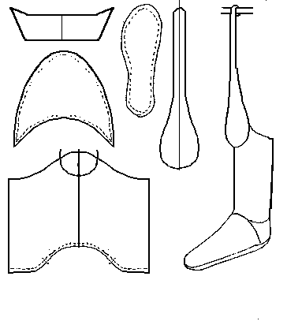

Muza
Persian Riding Boots (Late 12th/Early 13th Century)
Based on material in Osprey's
Saracen Faris, and so may not be wholly accurate. By the same token, the basic design is MY estimate of the pattern, and may not accurately reflect the author's original intent.
These boots are made to be relatively tight fitting. Nicolle says that since the manuscript drawings show the knee panel in a lighter color, they are likely meant to be of a softer leather. These knee panels then buckled to a waist belt.
The sole appears to be turned, and may be rawhide.
Return to
[Index] or
[Next]
Footwear of the Middle Ages - Historical Shoe Designs/Number 43, by I. Marc Carlson. Copyright 1996
This page is given for the free exchange of information, provided the Author's Name is included in all future revisions, and no money change hands, other than as expressed in the Copyright Page.